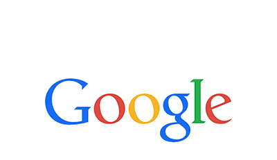
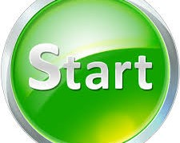

Starman's Website
Goals for this Page V2
- Practice front-end web building with this page.
Personal Goals for Winter Break
- Improve programming skillset.
- Take more active role in Formula and learn more about car design.
- Keep Applying for internships/Co-Ops/Summer Experience (Get something lined up for the summer).
- Continue to work out (maybe do 5-6 days).
How I Plan to Achieve these Goals
Tentative Schedule
- Work on python coding skills for about an hour (or at least 30mins).
- Work on web development skills for another hour (or at least 30mins).
- Work out for about an hour most days.
- Spend an 1.5-3 hours working on applying for internships, emailing, and formula tasks.
Accountability
Staying on a plan is much more difficult when there is a lack of accountability. To combat this, I plan to log my progress somehow. Obviously, my progress on this site will be clear, but other task will not be. Logging all my progress will make it easy to see how far I have come over time and show me where I am lacking after some period of time.
Reevaluation
It is unlikely that this plan will be the most effective plan. Therefore, I must continuely reevalute myself, my progress, and my plan. Doing this, I should continue to push myself forward and achieve the goals I have set for myself. Additionally, my schedule and priorities will change when my intership starts. A lot of time will be taken away from me then, so I will have to be able to adapt to a new scheule.
Weekly Goals
Programming
- Update this site as much as pssibly (daily hopefully).
- Find/Start a python project and work on it daily
- Look into learning back-end web development (Find a web app project to learn it with).
Formula
- Get the car uploaded into windchill. This may involve rebuilding the assembly in CREO.
- Communicate with Gartland as much as possible about the new diff mount/rear-end design.
- Finish the new rear-end design.
Intership/Co-Op/Summer
- Keep Applying for Internships.
- Check email daily for any emails.
- Keep improving resume, LinkedIn, and Applications.
Other Links

Zach's Resume
CSS Style Practice
Lil' JavaScript Practice

Updates
This will be where I will post updates. They will come whenever I make substantial progress to this site
- December 26, 2020: Refreshed myself with using git version control. I also made a GitHub Page for this site and created a new repository with this page's files